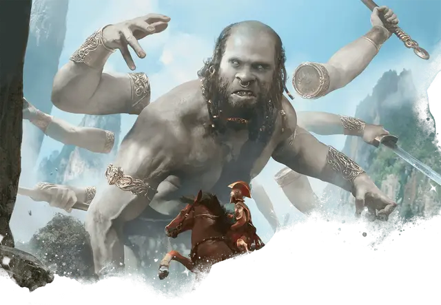

Сторукий
Hundred-Handed One
Огромный Великан, законно-нейтральный

Класс Доспеха 15 (природный доспех)
Хиты 243 (18к12 + 126)
Скорость 40 футов
| мод | спас | ||
|---|---|---|---|
| СИЛ | 26 | +8 | +8 |
| ЛОВ | 15 | +2 | +2 |
| ТЕЛ | 25 | +7 | +12 |
| мод | спас | ||
|---|---|---|---|
| ИНТ | 14 | +2 | +2 |
| МДР | 16 | +3 | +8 |
| ХАР | 16 | +3 | +3 |
Навыки Восприятие +8, Запугивание +8
Иммунитет к состояниям испуг
Чувства тёмное зрение 120 футов, пассивное Восприятие 18
Языки Великаний
Опасность 15 (13000 опыта)
Бонус мастерства +5
Особенности
Быстро реагирующий. Великан может совершать одну реакцию за каждый ход в бою.
Бдительный. Великан не может быть застан врасплох.
Действия
Мультиатака. Великан совершает четыре атаки Длинным мечом или две атаки Камнем.
Длинный меч. Рукопашная атака оружием: +13 к попаданию, досягаемость 15 футов, одна цель. Попадание: 21 (3к8 + 8) рубящего урона.
Камень. . Дальнобойная атака оружием: +13 к попаданию, дистанция 60/240 футов, одна цель. Попадание: 30 (4к10 + 8) дробящего урона. Если целью является существо, оно должно преуспеть в спасброске Силы Сл 21, иначе упадёт ничком.
Реакции
Парирование. Великан добавляет 5 к КД против одной рукопашной атаки, которая должна попасть по нему. Для этого великан должен видеть атакующего, и должен использовать рукопашное оружие.
Описание
Дополнительные пары рук волшебным образом вращаются вокруг тел титанических, почти забытых ремесленников, известных как сторукие. Эти великаны часто обитают в отдалённых горах и приморских утёсах, где они высекают свои воспоминания в древнем камне, покрывая свои территории замысловатыми рельефами и массивными статуями ушедших эпох. Некоторые задерживаются возле древних храмов и дворцов, руин, которые они когда-то воздвигли в честь древних богов или архонтов.
Великаны
Целый спектр великанов претендует на территории по всему Теросу, черпая силу из аспектов самого мира — от древнего камня и бушующего пламени до глубин морей и небес. В отличие от многих существ из легенд, большинство великанов обязаны своим существованием не Нюкте и мечтам смертных, а природным силам земли. В результате теросские великаны обычно наделены элементами, которые они воплощают, проявляющиеся в виде пылающих бород, замерзшей кожи, волос, потрескивающих от молний, или других первичных воплощений.
Однако, помимо этих первичных великанов, другие великанов наполняют сказания Тероса.